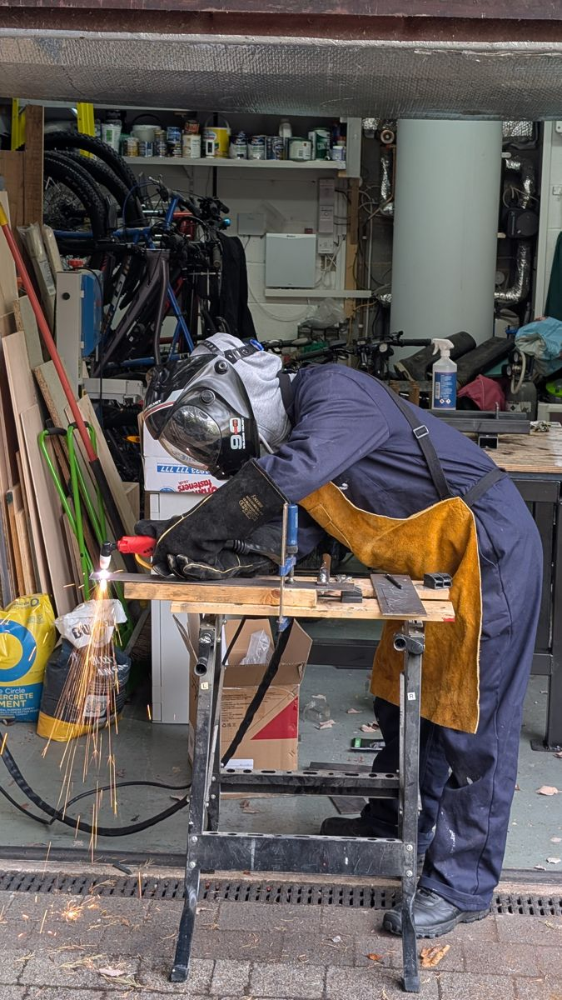
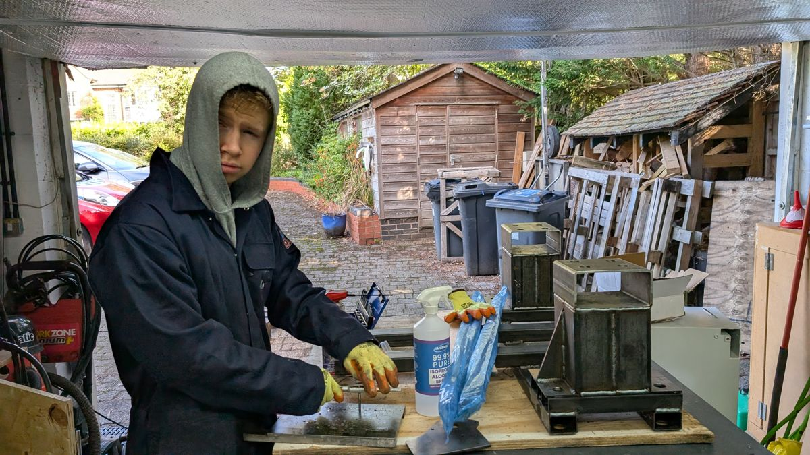
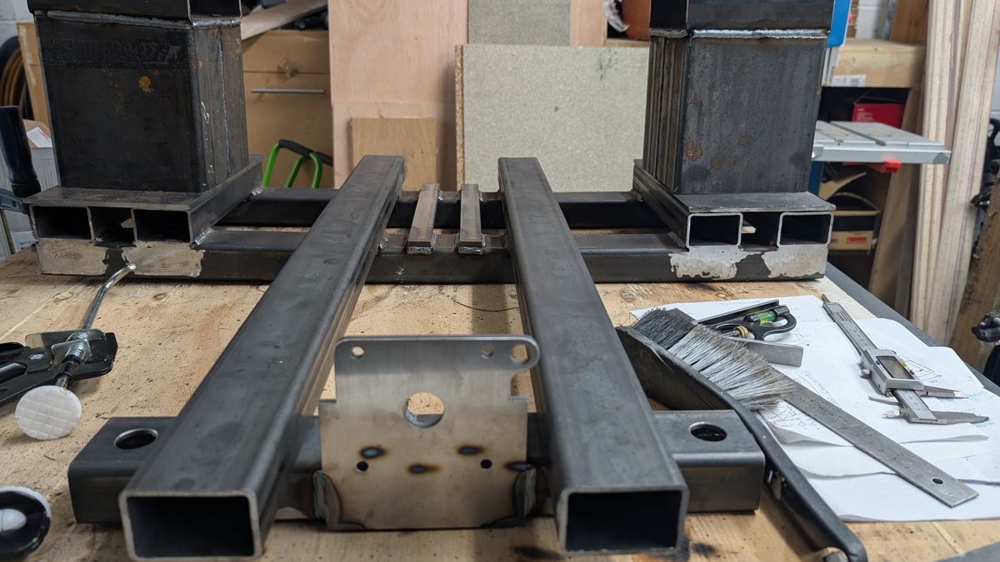
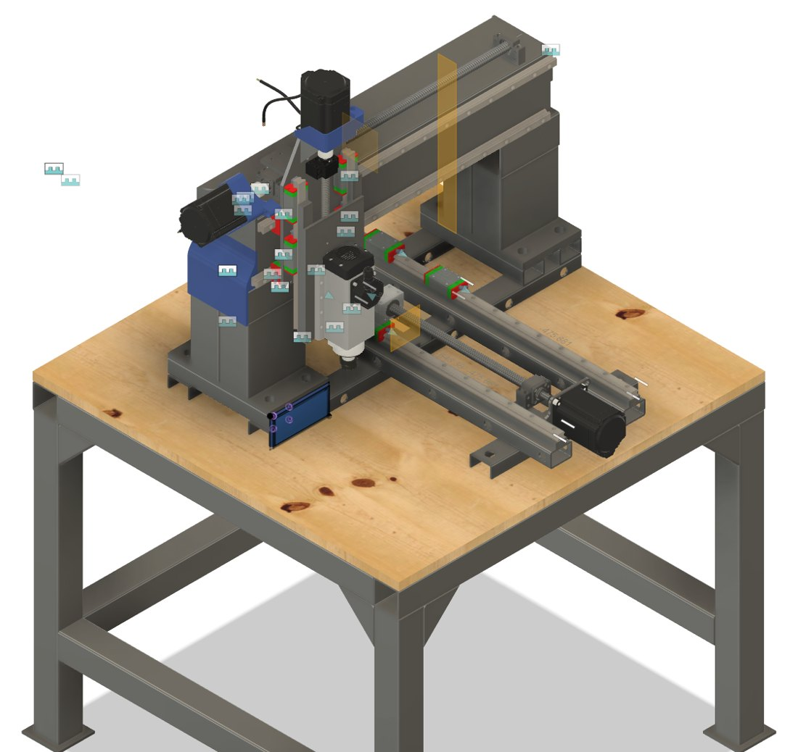

Metal-cutting CNC mill
2026 to 2027, in progress
My first CNC router could cut wood well but flexed too much for metal, and adhesive workholding failed on metal parts. So I designed a second machine from scratch in Fusion 360, aimed at stiffness.
It uses a fixed steel bridge with a moving table, profile linear rails and ballscrews. The box-section columns will be filled with a sand and oil mix to damp vibration. The bench and machine frame are welded and built; next I fit the ballscrews and install the electronics.




| Project | Metal-cutting CNC mill | ||
|---|---|---|---|
| Designed | W. Cowley | Software | Fusion 360 |
| Frame | Welded steel | Status | Build in progress |
- Role
- Design, fabrication, wiring
- Tools
- Fusion 360, plasma cutter, MIG and TIG welding, lathe, mill, taps and dies
- Funding
- Arkwright Scholarship and paid work experience at Safran